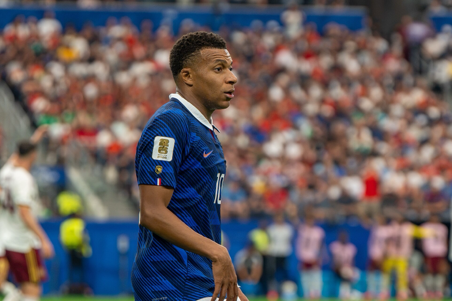

About the Photo
Mbappé is in France's dark blue number 10 shirt, turning his head to look at something off to his right. It is a daytime match and the stands behind him are packed, so the background is a wall of out-of-focus color. It is 900 by 600 pixels and 867 KB.
About the PNG Format
PNG stands for Portable Network Graphics. It was made as a free replacement for GIF.
- Colors: about 16.7 million, the same range as JPG
- Compression: lossless — nothing is thrown away
- Transparency: fully supported, including soft edges
- Animation: not supported
Being lossless means the small details on the shirt survive exactly as the camera recorded them, and I can re-save the file without it slowly getting worse. The trade-off is size: at 867 KB this is by far the heaviest image on the site, because lossless compression cannot do much with a busy photo. On a real site I would use JPG or WebP here and save PNG for logos and graphics that need transparency.
Why I Chose Him
Mbappé feels like the modern version of Ronaldo to me — young, fearless, and completely ready for the big stage. He performs in the moments that actually matter, and when adversity comes he seems to welcome it instead of hiding from it. He is also just fast, explosive and dangerous every time he touches the ball.
Source
- Photographer: Bryan Berlin
- License: CC BY-SA 4.0
- Original file: Wikimedia Commons
Changes I made: resized to 900 pixels wide and converted to a PNG.